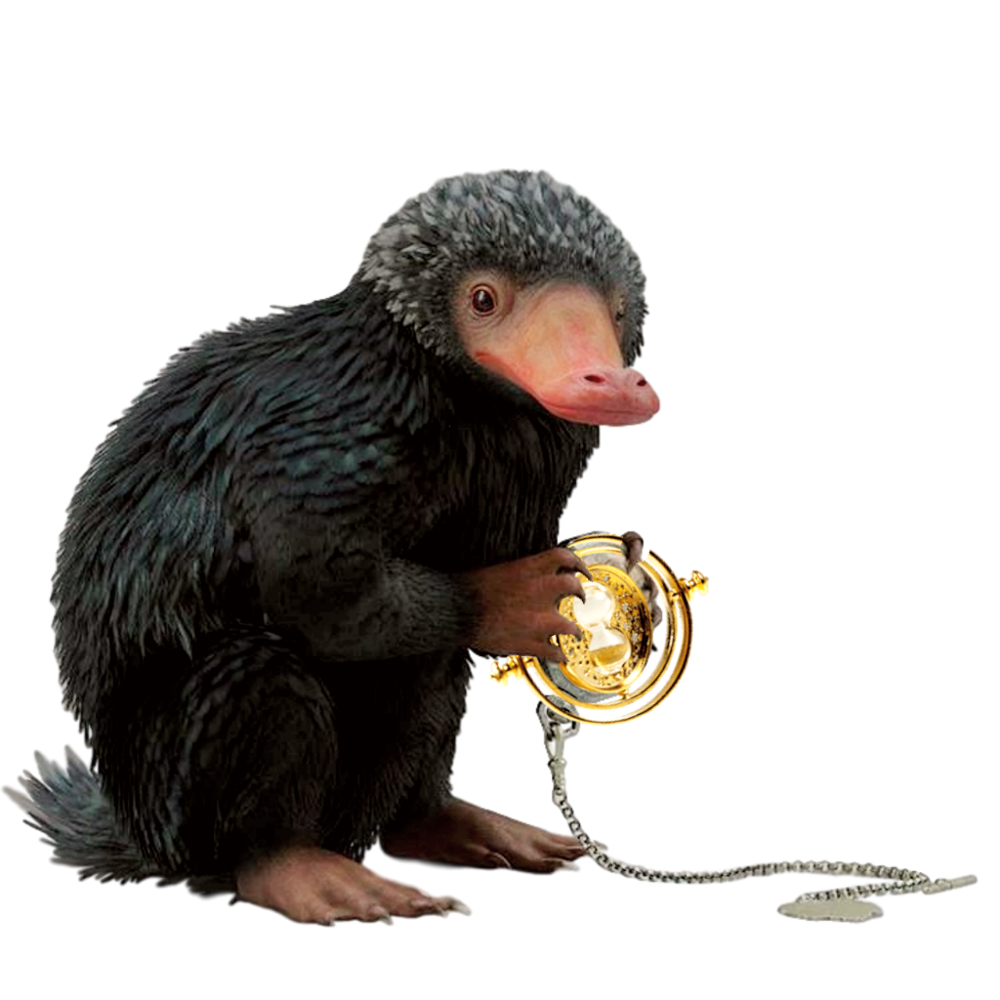
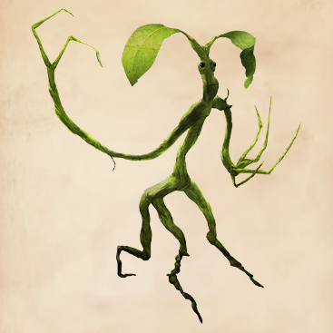
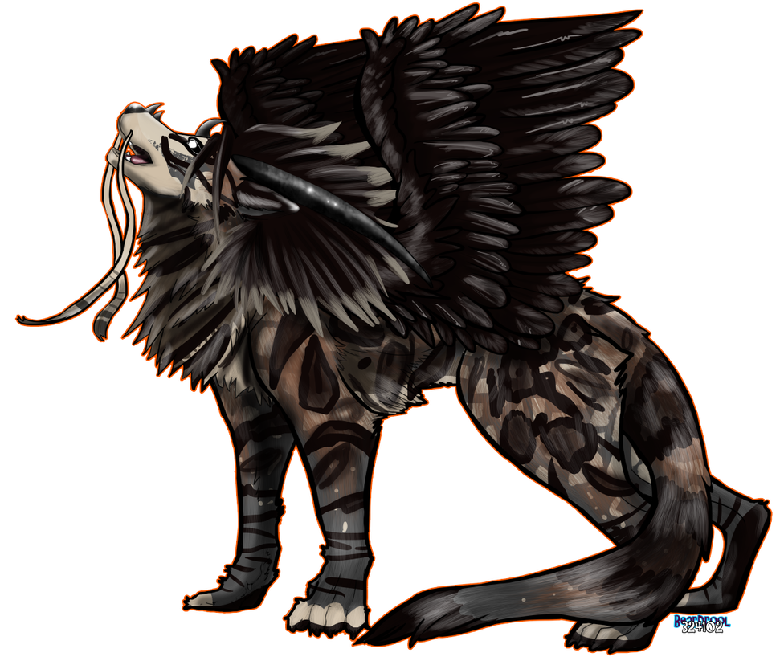
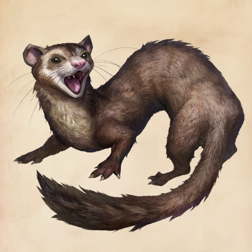
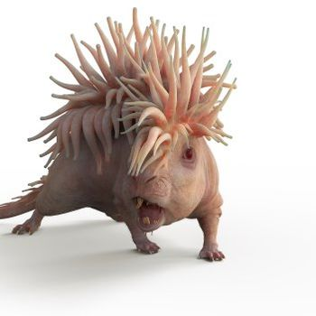

The Augurey, also known as the Irish Phoenix, is a thin and mournful looking bird, somewhat like a small underfed vulture in appearance, with greenish black feathers and a sharp beak. Its diet consists of insects, fairies and flies, which it hunts for in the heavy rain. Intensely shy, the Augurey lives in a tear-shaped nest in thorn and brambles

A Niffler was a creature with a long snout and a coat of black, fluffy fur. They were attracted to shiny things, which made them wonderful for locating treasure, but this also means that they could wreak havoc if kept (or set loose) indoors. Nifflers in general were usually harmless.

The Bowtruckle is a hand-sized, insect-eating tree dweller with long sharp fingers (two on each hand), brown eyes, and a general appearance of a flat-faced stick figure made of bark and twigs, which serves well as camouflage in its natural habitat. They are immensely difficult to spot.

The Nundu is a large East African beast that resembles a leopard. It moves silently, despite its "gigantic" size and is considered by some to be the most dangerous creature alive. The breath of the Nundu is toxic and filled with disease so potent that it can wipe out entire villages of people

The Jarvey resembles an overgrown ferret, and is commonly found in Great Britain, Ireland, and North America. The Jarvey is capable of Human speech, although true conversation with a Jarvey is impossible. The creature uses short, usually rude, statements and phrases in an almost constant stream.

The Murtlap is a marine beast resembling a rat with a growth on its back resembling a sea anemone, found on the coastal areas of Britain.
